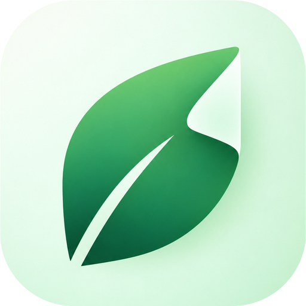

App: Leaf: PDF Scanner & Edit Tools (com.or10nlabs.leaf)
Developer: OR10N Labs
Last updated: 14 October 2026
Leaf helps you scan documents and edit, convert and manage PDF files. This policy explains what information the app handles and what is shared with third parties.
All scanning, editing, OCR (text recognition), conversion, compression, signing and other PDF operations happen on your device. Your documents, scans, signatures and extracted text are stored in the app's private storage on your device. We do not upload your documents to any server, and we do not have access to them.
We do not require an account, and we do not collect your name, email address or phone number.
Leaf contains ads, provided by Google AdMob. Ads appear inside the app, for example below the result of a completed tool. To show and measure ads, Google AdMob and its partners may collect and use information from your device, which can include:
This information is collected by Google, not by us, and it is subject to Google's own policies: Google Privacy Policy and How Google uses information from sites or apps that use its services.
Your documents, scans and extracted text are never shared with advertisers or used to target ads.
Your choices: you can reset your advertising ID or opt out of ads personalization in your Android settings (Settings → Privacy → Ads, or Settings → Google → Ads). Opting out does not remove ads; it makes them less personalized.
Leaf uses Google ML Kit's text recognition with a model bundled inside the app, so OCR runs entirely on your device and does not send images or text anywhere.
Apart from the advertising data handled by Google AdMob described above, we do not share, sell or transfer any information. We do not keep any information about you on our servers. Files you create stay on your device until you delete them in the app or uninstall Leaf, which removes all app data.
Leaf is not directed at children under 13, and we do not knowingly collect information from children.
Because your documents are not transmitted off your device, they are protected by your device's own security. You can also protect PDFs with a password using the app's Protect tool.
If we change this policy, we will update the date at the top. Material changes will be reflected here before they take effect.
Questions about this policy? Email orionlabs.apps@gmail.com.